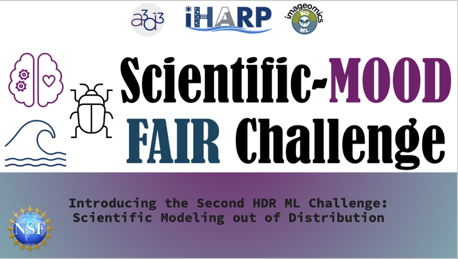
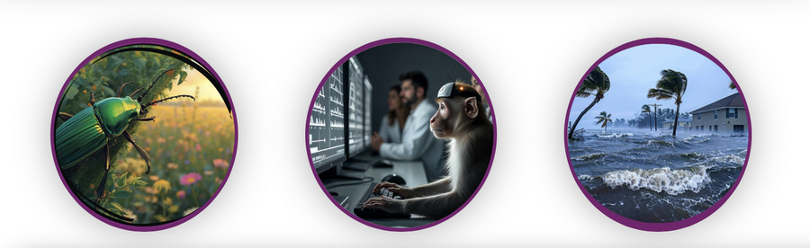

The National Science Foundation’s Harnessing the Data Revolution (HDR) ecosystem launched its second Machine Learning (ML) Challenge, a community competition aimed at “scientific modeling out of distribution,”or teaching AI systems to hold up when conditions change across places, seasons or instruments.
The 2025–26 challenge debuted during this week’s HDR Community Conference hosted by the Imageomics Institute and held in Columbus, Ohio. The event invites students, researchers and practitioners to stress-test ideas on open, well-documented science data.
New this year, the program runs on the National Research Platform (NRP), giving teams scalable, heterogeneous compute (GPUs/CPUs) and a higher submissions cap (up to 10 per day).
Central to the cause and concept of the challenge, every entry must be fully FAIR and reproducible through submission and evaluation: participants submit FAIR and Reproducible workflows run through a shared container and checked by automated scripts and a security/whitelist process. This ensures results can be rerun and trusted across labs.
The challenge is open now through Jan. 31, 2026, with an awards event planned for spring 2026; organizers also plan October hackathons to help teams form and get hands-on. Confirmed prizes include AWS and NVIDIA cloud credits for prizes and $400 in training credits for teams, and the program is seeking additional sponsors.

Year Two features three tracks from across HDR institutes. A3D3’s neural forecasting asks models to predict future neural activity, which is key to real-time neuroscience and closed-loop systems. Imageomics pairs biodiversity and climate by using NEON ground-beetle images as “sentinel taxa” to predict drought severity via the Standardized Precipitation Evapotranspiration Index (SPEI), linking trait signals in images with environmental change. iHARP targets coastal risk: given 70 years of sea-level data from 10 U.S. East Coast stations, teams forecast the number and timing of minor flooding days over a 14-day window, with multi-level scoring on dates, counts, and threshold proximity for 2 hidden stations.
Why it matters: Scientific AI often breaks when data drifts; HDR’s challenge raises the bar on open, reproducible, AI-ready science; and, for AI for Nature, it accelerates trustworthy models for ecology, climate and conservation.
Learn more and join: nsfhdr.org/mlchallenge-y2